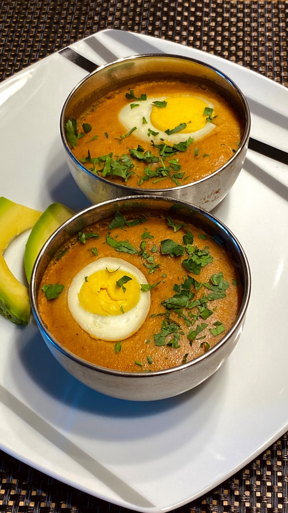

MOI MOI
HOME

Two Moi Moi puddings topped with boiled egg and fresh herbs
RECIPE DESCRIPTION
Moi Moi is a savory, steamed Nigerian bean pudding made by first soaking
and peeling black-eyed peas, then blending them into a perfectly smooth
batter with onions, fresh red bell peppers (tatashe), and scotch bonnets.
This velvety paste is mixed with vegetable oil (or palm oil), ground crayfish,
and seasonings like bouillon and salt, then often enriched with various fillings
such as hard-boiled eggs, corned beef, or flaked fish. The batter is then portioned
into individual ramekins, foil pouches, or traditionally, uma leaves (Thaumatococcus daniellii),
and steamed in a pot with a small amount of water until it sets into a firm, moist, and tender pudding.
Ingredients
- honey beans
- red bell pepper
- onions
- scotch bonnet
- vegetableoil/ palm oil
- water
- crayfish
- seasoning cubes
- salt
- hard boiled eggs
- fish or corned beef
Steps
- Soak black-eyed peas in water to soften, then peel the skins by rubbing them or pulsing in a blender.
- Rinse the peeled beans thoroughly until all skins are washed away
- Blend the peeled beans, red bell peppers, onions, and scotch bonnets with stock or water until completely smooth.
- Pour the smooth batter into a large bowl.
- Add vegetable oil (or warm palm oil), ground crayfish, seasoning cubes, and salt to the batter.
- Whisk the batter vigorously for 2-3 minutes to incorporate air, making it light and fluffy
- Prepare your containers (ramekins, foil pouches, or uma leaves) and add your optional fillings like boiled egg or fish.
- Pour the batter into the containers, leaving a little room for them to expand.
- Place a rack or crumpled foil in the bottom of a large pot, add boiling water, and arrange the containers inside.
- Cover the pot tightly with a lid and steam on medium-low heat for 45-60 minutes, until firm to the touch.